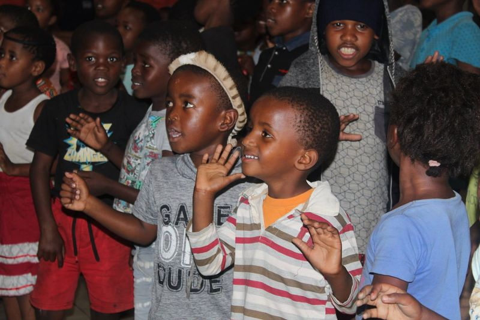
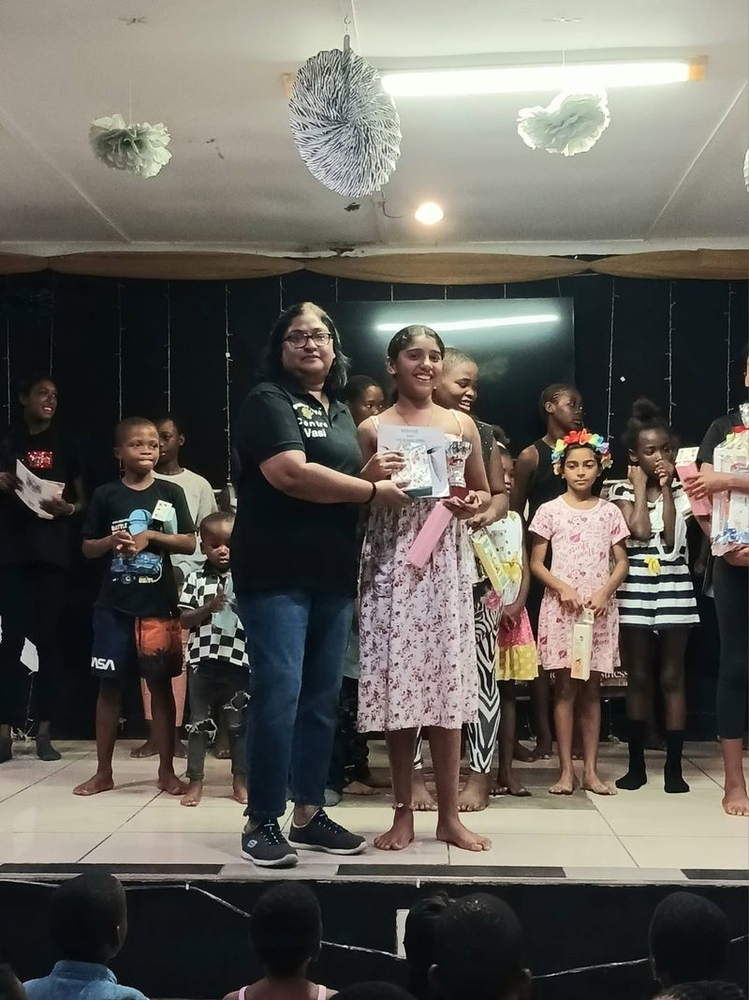
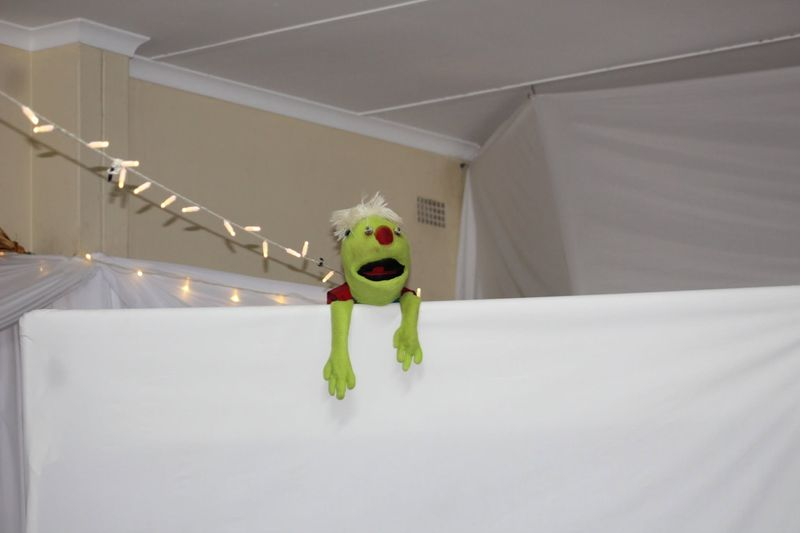

Kidz Club
Every Sunday morning from 8 to 10, children from Etete, Groutville and around KwaDukuza come together for praise, a Bible story, games, friends and a lot of encouragement.
Sundays
8 to 10am
At Breakthrough Centre, 170 Old Main Road, Etete. All children in our community are welcome, rain or shine.
This is where Breakthrough Centre began on 10 October 1990: a children's club that gave young people somewhere good to be. Thirty-six years later, Sunday mornings are still the heartbeat of the centre, and some of the children who came as toddlers now come back to encourage the next group to stay in school and finish strong. In the early days our girls even learned ballet at Kidz Club, taught by Pam Mills alongside Jessica, outside the little blue tin house.

What happens on a Sunday
The Kidz Club is the most exciting place to be on a Sunday morning. Children are blessed with a memorable childhood through the activities we give them, in a safe and secure environment supervised by trained professionals.
Praise and worship
The highlight of the morning. The children lead the songs, learn new ones in just a couple of sessions, and fill the hall with noise.
Stories and reading
A Bible story every week (Daniel in the lions' den, young Joseph and his coat, the prodigal son, Samson, Hannah and more), plus time with books and worksheets to build reading skills.
Life lessons
Friendship, gratitude, respect, a servant's heart, what Freedom Day and Youth Day mean, and how to stay safe. We've talked about bullying, gender-based violence and child protection too.
Games, crafts and sport
Arts and crafts, sport, a game of Monopoly building entrepreneurial skills, Scrabble setting foundational literacy patterns, the all-time favourite soccer machine and plenty of other games.
Feeding every Sunday
There is nothing more rewarding than putting a smile on the face of a child, so every Sunday the children share a meal together.
The annual Christmas party
The highlight of our calendar. Our annual Kidz Club party ensures that every child receives a gift for Christmas and a sumptuous treat.
Special days
Easter, Mother's Day, Father's Day, Mandela Day, Women's Day, Heritage Day and birthdays all get celebrated.
Visitors
Guests share with the children: an officer from Umhlali SAPS on substance and child abuse, Metro World Child South Africa on bullying, local churches who serve a meal, the Spin Da Flava team, and former Kidz Club members.

My City, My Future
At our "My City, My Future" contest, Kidz Club children shared their hopes and dreams for their community. The winner took home a R500 education voucher, the runners-up won hampers, five children received book prizes for their effort, and every child who took part got a pencil case.
Hearing a new generation speak about their future gives us real hope for South Africa.
Kidz Club in pictures
Thirty-six years of Sunday mornings: a garden, games, gifts, Heritage Day, Larry and a lot of happy faces. The photos move on their own; tap one to see it bigger.
Meet Larry!
Larry the puppet appears occasionally to give the children a good moral lesson, while making lots of mistakes himself in a very hilarious manner. We call him Laugh Out Larry.
During the pandemic Larry found himself in the Ballito Television studio, presenting daily kids' programmes to children in their homes. You can catch the Laugh Out Larry Show on YouTube.

Come and join us
Questions about Kidz Club? Call or WhatsApp 081 775 1488.